cuu_bao_luu_ly_thap
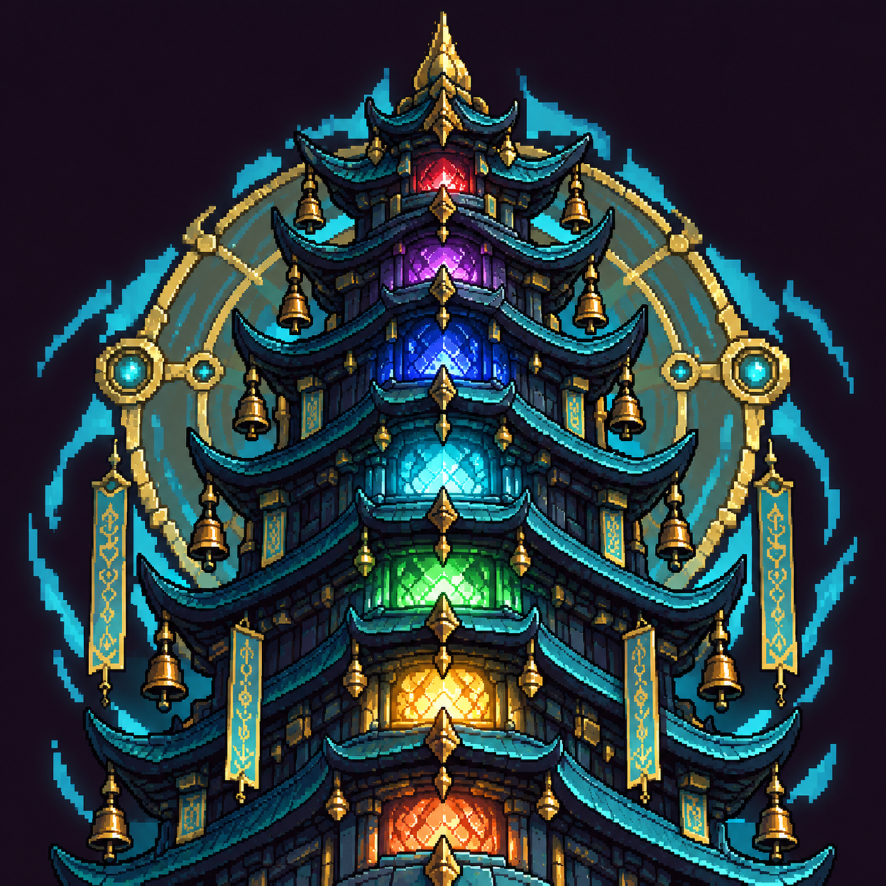

Cận phần trên tháp, không đọc đủ chín tầng; mái và bảo quang nhận ra, nhiều chi tiết nhỏ. P1c2 thân tối gần vòng ngoài, điểm sáng màu còn rõ; chưa đạt đầy đủ đặc tả, giữ candidate.
8/8 võ hồn, mỗi võ hồn 1/3 lượt. RAW image_gen nguyên byte; pixel hoá preset portrait2 64×64, 16 màu. Tất cả là ứng viên chưa duyệt, chưa nhập game. Lỗi còn lại khai bằng --eye. Từ trái: RAW, P1c2 ×3, P1c2 1×.

Cận phần trên tháp, không đọc đủ chín tầng; mái và bảo quang nhận ra, nhiều chi tiết nhỏ. P1c2 thân tối gần vòng ngoài, điểm sáng màu còn rõ; chưa đạt đầy đủ đặc tả, giữ candidate.
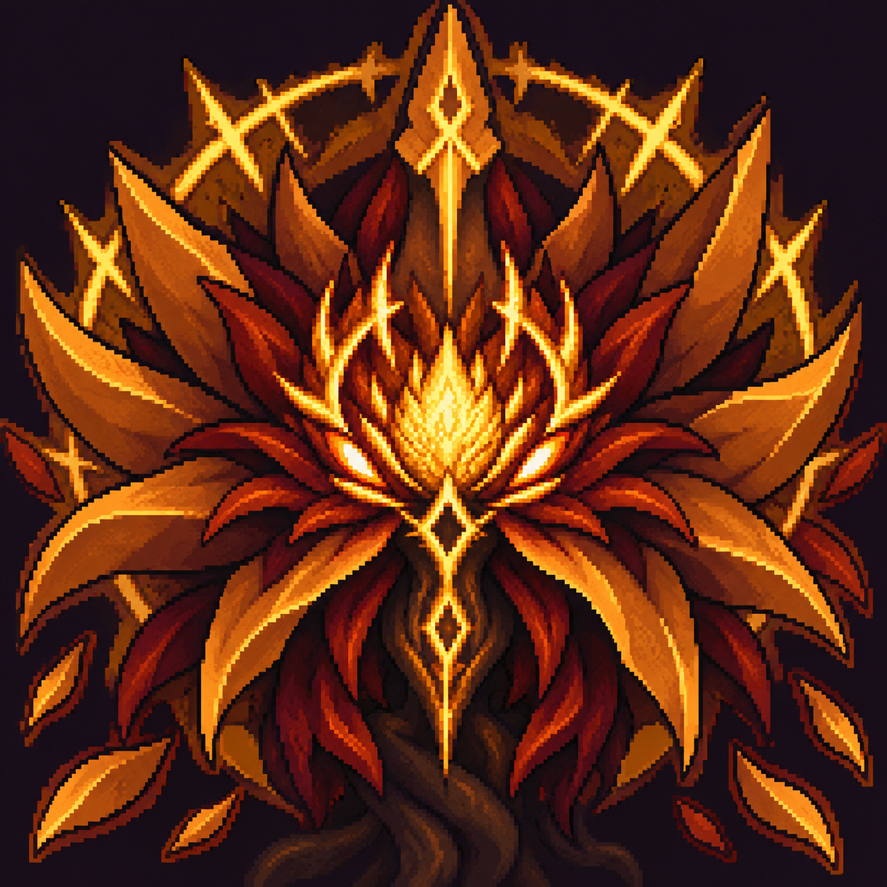
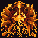
Cánh dao cam đất và nhụy vàng rõ nhưng đối xứng giống mặt nạ, cánh tràn mép; P1c2 còn nhiều cụm nhỏ, lõi vàng mạnh, khối tối giữa các cánh còn nhận ra; cần duyệt hình hoa.
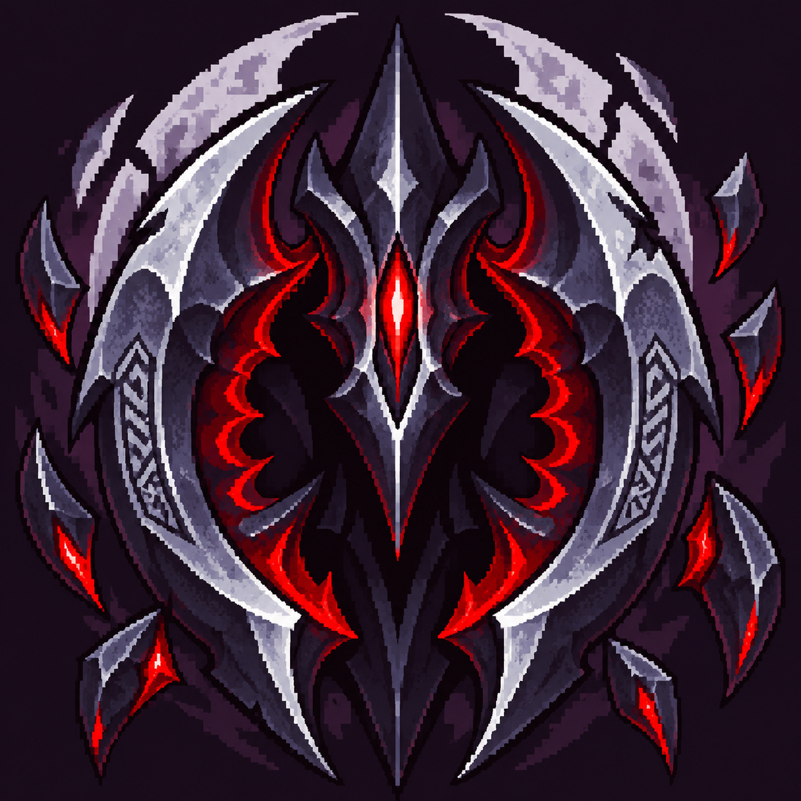
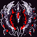
Hai lưỡi liềm riêng, mép bạc và răng trong đỏ đọc ra; chóp giữa lớn làm hình gần huy hiệu, mảnh phụ và đạo văn còn dày. P1c2 giữ liềm và đỏ nhưng khối tối giữa gần nền; nền vầng tím cùng họ thép tím, chưa đối gam rõ.
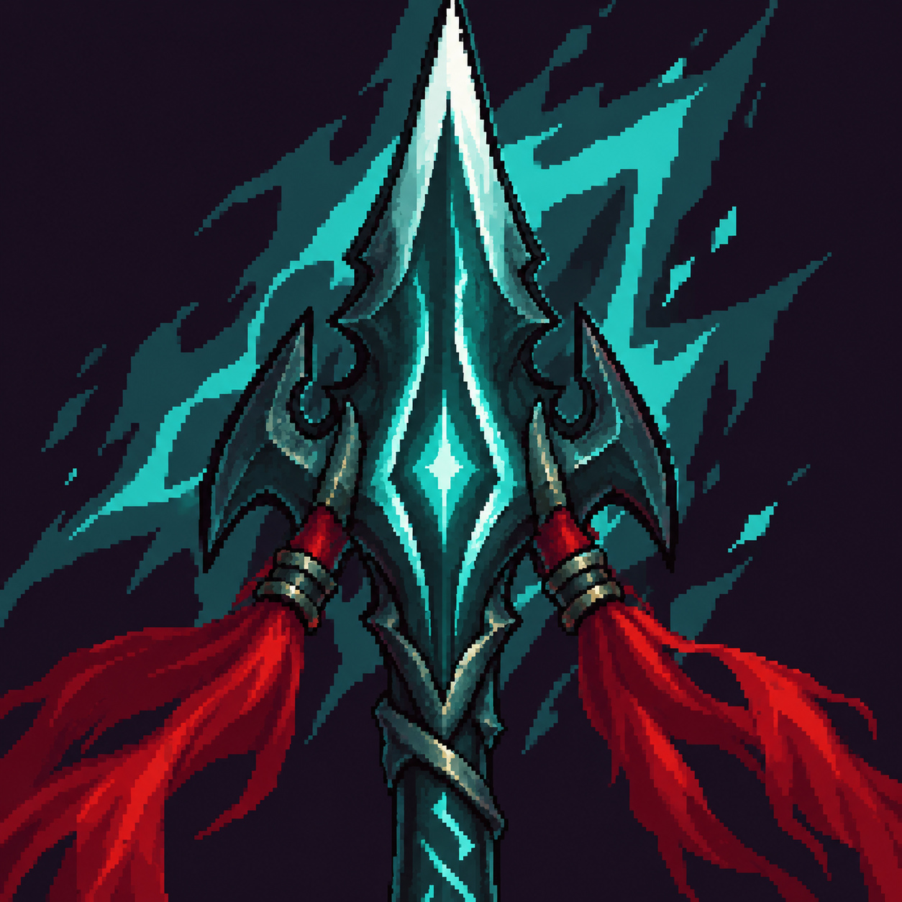
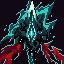
Mũi thương thoi xanh ngọc, rãnh lõi và hai tua đỏ đọc rõ; mũi sát và bị cắt mép trên. P1c2 vẫn nhận ra thương và hai tua; hồn quang xanh phía sau lớn, cùng gam thân nên cạnh tối chưa tách hẳn; còn nét vụn ở cán.
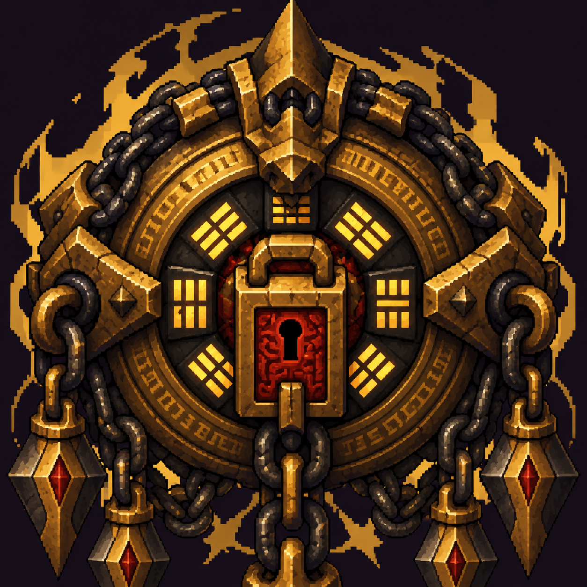
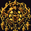
Vòng đồng nhiều lớp, ổ khóa đỏ trung tâm, xích sắt và móc nhọn nhận ra. Chi tiết vòng/xích dày; chóp và xích dưới bị cắt; vàng sáng lan nhiều điểm ngoài lõi. P1c2 khóa đỏ nhỏ nhưng còn đọc ra, mắt xích thành cụm vụn, thân ấm tách nền tím tối.
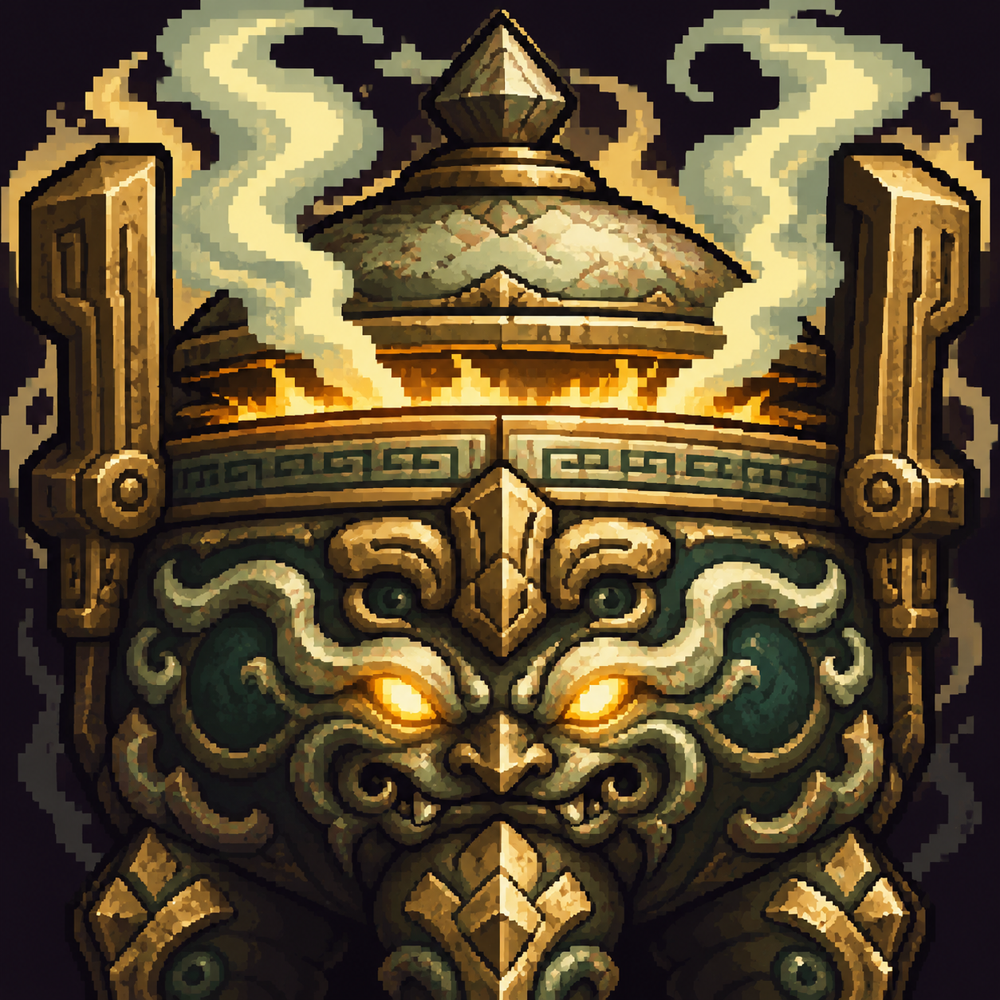

Cận miệng đỉnh, hai quai và hoa văn thao thiết; khối ngọc xanh sẫm/ngà, thiên vàng đồng hơn bạch ngọc. Chân không đủ trong khung cận cảnh; khói sáng lớn và hoa văn dày. P1c2 vẫn nhận ra đỉnh nhưng khói/miệng/quai sáng tràn 37%, nét chạm khắc thành cụm nhỏ; không có chữ đọc được.
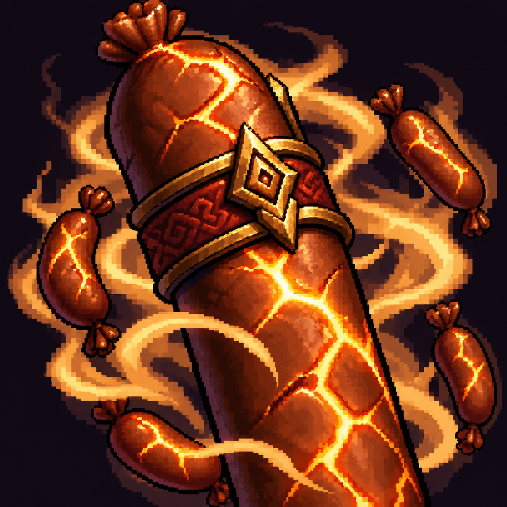

Trụ hương tràng nứt vỏ, đai đỏ và hương tràng nhỏ nhận ra, không nhân hoá. Hơi nóng vàng sáng lớn cùng gam thân cam, nhiều vật phụ, trụ cắt mép trên/dưới. P1c2 giữ vết nứt nhưng hơi nóng cạnh tranh chủ thể, đai đỏ gần thân; cần chủ repo duyệt riêng theo mục 4.
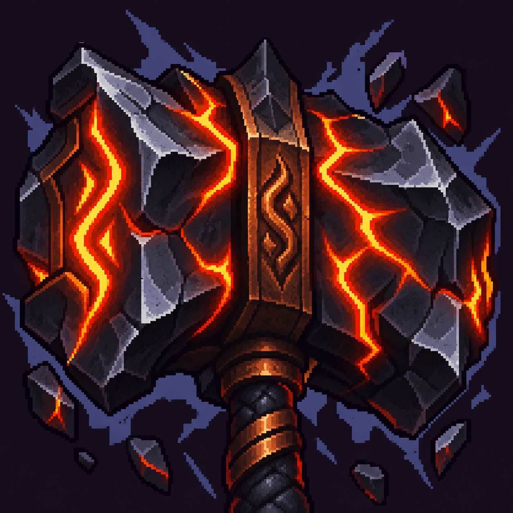
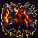
Đầu búa khối sắt góc cạnh, đai đồng và cán xoắn theo neo tthoadev; vết nứt cam rộng hơn đặc tả rất ít, đá phụ nhiều. P1c2 giữ đầu búa và khe cam nhưng thân tối gần nền/vầng tím, mép thép còn vụn; không có người hay chữ đọc được.